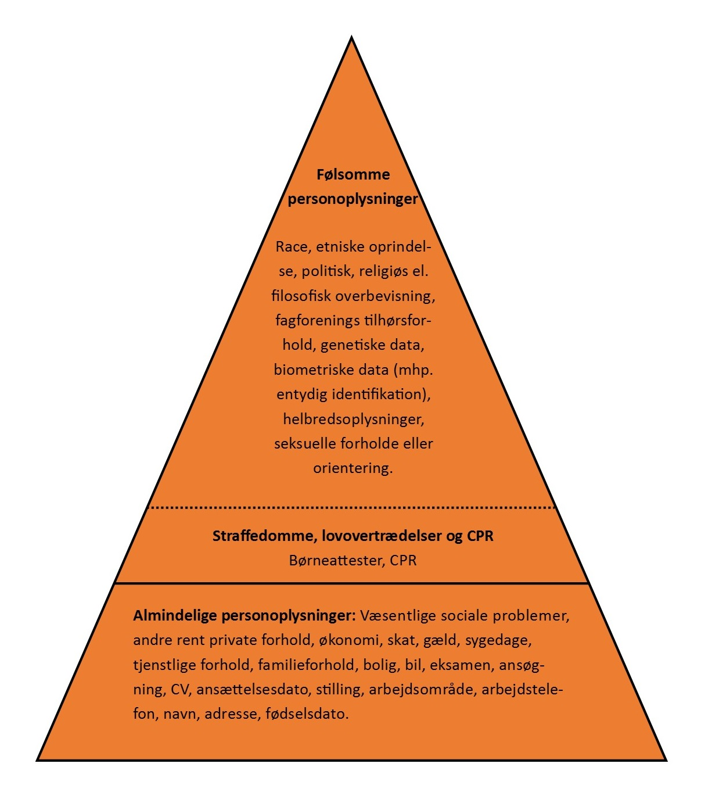

Kapitel 8 Persondatabeskyttelse og hvidvask
8.1 Databeskyttelse og bekæmpelse af hvidvask og terrorfinansiering
8.1.0.1 Databeskyttelsesforordningen stiller krav i praksis
8.1.0.2 Databeskyttelsesreglerne på 7 minutter
8.2 Databeskyttelse ved behandling af personoplysninger
Enhver person har ret til beskyttelse af sine personoplysninger, og enhver, der behandler personoplysninger om andre i ikke-privat sammenhæng, er forpligtet til at iagttage disse rettigheder og til at beskytte disse personoplysninger.1
Disse rettigheder og forpligtelser går samlet under betegnelsen “databeskyttelse”.
Enhver behandling af andres personoplysninger, der ikke sker i en rent privat sammenhæng, skal ske i overensstemmelse med reglerne på databeskyttelsesområdet, jf. databeskyttelsesforordningen (også kaldet; ”GDPR” General Data Protection Regulation), som har direkte virkning i Danmark.
Den supplerende databeskyttelseslovs formål er identisk med formålet i databeskyttelsesforordningen, nemlig beskyttelse af fysiske personer i forbindelse med behandling af personoplysninger og fri udveksling af personoplysninger i EU.
Når en virksomhed behandler personoplysninger er den underlagt reglerne i persondataforordningen og databeskyttelsesloven.
Persondataforordningen pålægger virksomhederne en række forpligtelser, når de behandler personoplysninger.
Omvendt får den, der behandles oplysninger om (den registrerede) en række rettigheder.
Intro Databeskyttelsesloven
Hvad er persondata?
8.2.1 Hvad er ”behandling” i persondataretten?
 Enhver form for oplysning, der knytter sig til en bestemt fysisk person, som gør personen identificerbar. Det kan fx være et personnummer, en bopælsadresse, et journalnummer, et bilregistreringsnummer, en IP-adresse osv.
Hvis oplysninger om fysiske personer er fuldstændig anonymiserede, er der ikke tale om personoplysninger.
Ifølge databeskyttelsesforordningens artikel 4, nr. 2, skal begrebet ”behandling” forstås som enhver aktivitet eller række af aktiviteter - med eller uden brug af automatisk behandling - som personoplysninger eller en samling af personoplysninger gøres til genstand for, f.eks. indsamling, registrering, organisering, systematisering, opbevaring, tilpasning eller ændring, genfinding, søgning, brug, videregivelse ved transmission, formidling eller enhver anden form for overladelse, sammenstilling eller samkøring, begrænsning, sletning eller tilintetgørelse.
Enhver form for oplysning, der knytter sig til en bestemt fysisk person, som gør personen identificerbar. Det kan fx være et personnummer, en bopælsadresse, et journalnummer, et bilregistreringsnummer, en IP-adresse osv.
Hvis oplysninger om fysiske personer er fuldstændig anonymiserede, er der ikke tale om personoplysninger.
Ifølge databeskyttelsesforordningens artikel 4, nr. 2, skal begrebet ”behandling” forstås som enhver aktivitet eller række af aktiviteter - med eller uden brug af automatisk behandling - som personoplysninger eller en samling af personoplysninger gøres til genstand for, f.eks. indsamling, registrering, organisering, systematisering, opbevaring, tilpasning eller ændring, genfinding, søgning, brug, videregivelse ved transmission, formidling eller enhver anden form for overladelse, sammenstilling eller samkøring, begrænsning, sletning eller tilintetgørelse.
Begrebet “automatisk databehandling” er sammenfaldende med “edb” eller “elektronisk behandling”, som blev anvendt i dagældende databeskyttelsesdirektivets artikel 3, stk. 1. Bestemmelsen i databeskyttelsesforordningens artikel 2 svarer således til det tidligere gældende databeskyttelsesdirektivs materielle anvendelsesområde.
Privates aktiviteter på Facebook er ikke omfattet af databeskyttelsesforordningen. Anderledes med fansider på Facebook, hvor Facebook og administratoren af en fanside har et fælles dataansvar for behandlingen af personoplysninger, som bliver indsamlet i forbindelse med besøg på den pågældende fanside.
Behandlingsbegrebet skal forstås meget bredt og dækker over enhver form for håndtering af personoplysninger, såsom:
- Indsamling
- Registrering
- Systematisering
- Opbevaring
- Søgning
- Tilpasning
- Sletning
- Videregivelse
8.2.2 Opdelingen af personoplysningerne
Databeskyttelsesforordningen opdeler personoplysninger i tre typer:
- Almindelige ikke-følsomme oplysninger,
- Særlige kategorier af oplysninger (følsomme oplysninger) og
- Oplysninger om straffedomme og lovovertrædelser eller tilknyttede sikkerhedsforanstaltninger. Der findes to kategorier af personoplysninger Almindelige ikke-følsomme personoplysninger fx:
- Fx navn, adresse, telefonnummer, køn, alder
Følsomme personoplysninger fx:
- Race og etnisk baggrund
- Politisk, religiøs og filosofisk overbevisning
- Fagforeningsmæssigt tilhørsforhold, helbred, seksuel orientering
Kategorier af personoplysninger
| Følsomme personoplysninger | Almindelige personoplysninger | |
| Race, etnisk oprindelse, politisk, religiøs el. filosofisk overbevisning, fagforeningsmæssige tilhørsforhold, genetiske data, biometriske data mhp. entydig identifikation, helbredsoplysninger, seksuelle forhold eller orientering | Straffedomme og lovovertrædelser | Væsentlige sociale problemer, andre rent private forhold, økonomi, skat, gæld, sygedage, tjenstlige forhold, familieforhold, bolig, bil, eksamen, ansøgning, CV, ansættelsesdato, stilling, arbejdsområde, arbejdstelefon, navn, adresse, fødselsdato |
| Kilde: | ||
| Databeskyttelsesforordningen |
 En anden måde at se de forskellige kategorier af personoplysninger på. Jo højere oppe i trekanten oplysningerne er, desto strengere betingelser for at behandle dem. Pjecen: Databeskyttelsesforordningen - En introduktion til de kommende, nye regler om beskyttelse af personoplysninger
8.2.2.1 Hvornår kan der ske behandling af ikke-følsomme oplysninger?
Almindelige personoplysninger omfatter alle oplysninger, der ikke er klassificeret som særlige kategorier af oplysninger (følsomme personoplysninger). Det kan for eksempel være identifikationsoplysninger som navn og adresse eller oplysninger om økonomi, skat, gæld, væsentlige sociale problemer, andre rent private forhold, sygedage, tjenstlige forhold, familieforhold, bolig, bil, eksamen, ansøgning, CV, ansættelsesdato og -stilling, arbejdsområde og arbejdstelefon. En virksomhed må kun behandle almindelige ikke- følsomme personoplysninger, hvis en af følgende betingelser er opfyldt:
- Virksomheden har et lovligt samtykke
- Behandling er nødvendig for at opfylde en aftale med den registrerede
- Virksomheden er iht. lov forpligtet til at behandle oplysningerne
- Hvis virksomheden har en saglig interesse i at behandle oplysningerne, som overstiger den registreredes interesser
”Hvordan håndterer I personoplysninger i jeres virksomhed?”
8.2.2.2 Hvornår kan der ske behandling af følsomme oplysninger?
Særlige kategorier af personoplysninger (følsomme personoplysninger) følger af databeskyttelsesforordningens artikel 9, stk. 1. Følsomme personoplysninger er udtrykkelig afgrænset i databeskyttelsesforordningen, og adgangen til at behandle sådanne oplysninger er snævrere end ved almindelige personoplysninger. Følsomme oplysninger er nærmere oplysninger om:
- Race og etnisk oprindelse
- Politisk overbevisning
- Religiøs eller filosofisk overbevisning
- Fagforeningsmæssige tilhørsforhold
- Genetiske data
- Biometriske data med henblik på entydig identifikation
- Helbredsoplysninger
- Seksuelle forhold eller seksuel orientering.
- Kun de oplysninger, der er nævnt ovenfor, er følsomme personoplysninger.
Af databeskyttelsesforordningen fremgår det, hvornår der må ske behandling af følsomme oplysninger. De følsomme oplysninger omfattet af databeskyttelsesforordningens artikel 9, stk. 1, må dog behandles, hvis der er hjemmel til det i forordningen, hvilket særligt vil sige i databeskyttelsesforordningens artikel 9, stk. 2, litra a-j:
Behandling af de pågældende oplysninger kan således ske på betingelse af, at den registrerede har givet et klart og udtrykkeligt samtykke til behandling af sådanne personoplysninger (litra a) Der skal således være tale om en frivillig, specifik og informeret viljestilkendegivelse. Et samtykke skal meddeles på en sådan måde, at det klart og utvetydigt fremgår, at den registrerede har meddelt sit samtykke til behandlingen. Herudover skal samtykket være udtrykkeligt. Heraf følger, at den dataansvarlige ikke vil kunne opnå stiltiende eller indirekte tilslutning til behandling af de i artikel 9, stk. 1 nævnte oplysninger. Et egentligt krav om skriftlighed følger ikke af bestemmelsen. Der bør dog i videst muligt omfang søges indhentet et skriftligt samtykke fra den registrerede, idet der herved opnås klarhed omkring samtykkets rækkevidde.
at behandling er nødvendig for at overholde den dataansvarliges eller den registreredes arbejds-, sundheds- og socialretlige forpligtelser og specifikke rettigheder, for så vidt den har hjemmel i EU-retten eller medlemsstaternes nationale ret eller en kollektiv overenskomst i medfør af medlemsstaternes nationale ret, som giver fornødne garantier for den registreredes grundlæggende rettigheder og interesser (litra b),
at behandling er nødvendig for at beskytte den registreredes eller en anden fysisk persons vitale interesser i tilfælde, hvor den registrerede fysisk eller juridisk ikke er i stand til at give samtykke (litra c),
at behandling foretages af en stiftelse, en sammenslutning eller et andet organ, som ikke arbejder med gevinst for øje, og hvis sigte er af politisk, filosofisk, religiøs eller fagforeningsmæssig art, som led i organets legitime aktiviteter og med de fornødne garantier, og på betingelse af at behandlingen alene vedrører organets medlemmer, tidligere medlemmer eller personer, der på grund af organets formål er i regelmæssig kontakt hermed, og at personoplysningerne ikke videregives uden for organet uden den registreredes samtykke (litra d),
at behandling vedrører personoplysninger, som tydeligvis er offentliggjort af den registrerede (litra e),
at behandling er nødvendig, for at retskrav kan fastlægges, gøres gældende eller forsvares, eller når domstole handler i deres egenskab af domstol (litra f),
at behandling er nødvendig af hensyn til væsentlige samfundsinteresser på grundlag af EU-retten eller medlemsstaternes nationale ret og står i rimeligt forhold til det mål, der forfølges, respekterer det væsentligste indhold af retten til databeskyttelse og sikrer passende og specifikke foranstaltninger til beskyttelse af den registreredes grundlæggende rettigheder og interesser (litra g),
at behandling er nødvendig med henblik på forebyggende medicin eller arbejdsmedicin til vurdering af arbejdstagerens erhvervsevne, medicinsk diagnose, ydelse af social- og sundhedsomsorg eller -behandling eller forvaltning af social- og sundhedsomsorg og -tjenester på grundlag af EU-retten eller medlemsstaternes nationale ret eller i henhold til en kontrakt med en sundhedsperson og underlagt de betingelser og garantier, der er omhandlet i databeskyttelsesforordningens artikel 9, stk. 3 (litra h),
at behandling er nødvendig af hensyn til samfundsinteresser på folkesundhedsområdet (litra i), eller
at behandling er nødvendig til arkivformål i samfundets interesse, til videnskabelige eller historiske forskningsformål eller til statistiske formål på grundlag af EU-retten eller medlemsstaternes nationale ret og står i rimeligt forhold til det mål, der forfølges, respekterer det væsentligste indhold af retten til databeskyttelse og sikrer passende og specifikke foranstaltninger til beskyttelse af den registreredes grundlæggende rettigheder og interesser (litra j).
| Følsomme personoplysninger | Personoplysninger med særlig beskyttelse | Andre personoplysninger |
|
Som udgangspunkt ikke, medmindre: - Der er givet samtykke - Det sker for at sikre personens vitale interesser, og der ikke kan indhentes samtykke (Sygdomsreglen) - Der er tale om en forening der behandler oplysningerne som led i deres aktiviteter - Hvis man selv har offentliggjort oplysningen - For at kunne fastlægge et retskrav - For at kunne overholde arbejdsretlige forpligtelser |
Hvis: - Der er givet samtykke - Det følger af lovgivningen - Det sker som til statistiske formål - Et af kriterierne fra de følsomme oplysninger er opfyldt |
Hvis: - Der er givet samtykke - Det sker for at opfylde en kontrakt - Det sker for at opfylde en retlig forpligtelse - Det sker for at sikre personens vitale interesser, og der ikke kan indhentes samtykke (Sygdomsreglen) - Det sker for at udføre en opgave i samfundets interesse - Der er en legitim interesse hos virksomheden) |
| Kilde: | ||
| Datatilsynet |
8.2.3 Virksomhederne skal overholde god databehandlingsskik
God databehandlingsskik er en retlig standard, som udfyldes af Datatilsynet. Begrebet indebærer bl.a., at behandlingen af oplysninger skal være rimelig og lovlig. Standarden anses efter praksis fra Datatilsynet for bl.a. at omfatte krav til den dataansvarlige om forudgående underretning af den registrerede om visse behandlingsaktiviteter, en pligt til at notere den registreredes indsigelser i forhold til rigtigheden af de registrerede oplysninger og underretning af berørte personer ved brud på datasikkerheden. God databehandlingsskik supplerer således navnlig databeskyttelseslovens regler om den registreredes rettigheder:
- Persondatabehandlingen skal være lovlig og rimelig.
- Formålet skal være sagligt.
- Oplysningerne skal være korrekte og opdaterede.
- Ukorrekte oplysninger bør slettes eller rettes - også når der ikke længere er behov for dem i forhold til det definerede formål.
8.2.4 Virksomhederne har en oplysningspligt når de behandler personoplysninger
- Den registrerede skal kende virksomhedens identitet og skal vide, hvordan han eller hun kommer i kontakt med virksomheden.
- Den registrerede oplyses om formålet med at behandle persondata og grundlaget (fx samtykke)
8.2.5 Nærmere om kravet til samtykke for, at der kan behandles personoplysninger
Behandlingshjemlen
Ved spørgsmålet om, hvornår personoplysninger kan behandles, er den altovervejende hovedregel, at personoplysninger vil kunne behandles, såfremt der er det fornødne samtykke fra den registrerede til behandlingen.
Det følger af databeskyttelsesforordningens artikel 7, stk. 3, at den registrerede til enhver tid har ret til at trække sit samtykke tilbage. Tilbagetrækning af samtykke berører ikke lovligheden af den behandling, der er baseret på samtykke inden tilbagetrækningen. Inden der gives samtykke, skal den registrerede oplyses om, at samtykket kan trækkes tilbage.
Det skal være lige så let at trække sit samtykke tilbage som at give det. Oplysning om, at samtykket kan trækkes tilbage er således nu efter 25. maj 2018 en gyldighedsbetingelse for det afgivne samtykke.
For både almindelige og følsomme data gælder i begge sektorer privat som offentlig, at der kan ske behandling, såfremt den registrerede samtykker hertil.
Tidspunkt Den registreredes samtykke skal være på plads inden, den dataansvarlige påbegynder behandling af de oplysninger, som samtykket angår.
Formkrav Et samtykke kan både afgives mundtligt, skriftligt og digitalt. Det afgørende er, at den registreredes erklæring eller handling tydeligt tilkendegiver den registreredes hensigt, og et samtykke kan derfor ikke gives stiltiende eller være underforstået.
Den dataansvarlige skal endvidere som nævnt kunne bevise, at den registrerede har givet sit samtykke til behandlingen af personoplysninger og kunne bevise, hvad det meddelte samtykke omfatter.
Et samtykke bør derfor bør i videst mulige omfang afgives skriftligt eller på anden måde, som kan bevises.
Kan den dataansvarlige ikke bevise, at der foreligger et gyldigt samtykke, er konsekvensen, at samtykket ikke kan anses for at være i overensstemmelse med forordningen og kan dermed ikke udgøre et lovligt behandlingsgrundlag.
Frivilligt Et samtykke skal være frivilligt. Formålet med et samtykke er at give de registrerede et valg og ikke mindst kontrol over personoplysninger om dem selv.
Et samtykke anses derfor ikke for at være afgivet frivilligt, hvis den registrerede ikke har et reelt eller frit valg. Et samtykke må f.eks. ikke være afgivet under tvang. Dette gælder, uanset om det er den dataansvarlige eller andre, der udøver tvang over for den registrerede.
Den omstændighed, at den registrerede er i den dataansvarliges varetægt, f.eks. indsat i fængsel, undergivet værnepligt mv., udelukker ikke, at vedkommende kan give et gyldigt samtykke. Eksempel - En privat sportsforening beder sine medlemmer om samtykke til at tage portrætbilleder af dem for at offentliggøre billederne på sportsforeningens hjemmeside. Medlemmerne anses for at have et reelt og frit valg, så længe et nægtet samtykke ikke medfører negative konsekvenser (f.eks. ekskludering af foreningen).2
Speak 23

8.2.5.1 Tjekliste for samtykke
Datatilsynet og Justitsministeriet har udarbejdet følgende nedenstående tjekliste, herunder kan den liste tjene som en rettesnor for, om man som dataansvarlig er på linje med kravene i databeskyttelsesforordningen eller ej:3
- Den dataansvarlige har taget stilling til, at samtykke er den mest hensigtsmæssige hjemmel til at behandle data i den givne situation
- Samtykkeanmodningen er tydelig og adskilt fra øvrig tekst, som f.eks. salgs- og leveringsbetingelsesvilkår
- Den dataansvarlige indhenter altid samtykke via et aktivt tilvalg fra den samtykkendes side
- Den dataansvarlige indhenter aldrig samtykke via forudafkrydsede samtykkefelter eller på anden vis, der baserer sig på den samtykkendes passivitet
- Samtykket er formuleret i et klart og enkelt sprog, som er letforståeligt for en person i målgruppen
- Samtykket specificerer formålet med den påtænkte behandling af data
- Hvis den dataansvarlige ønsker samtykke til flere forskellige formål, spørges der om separat samtykke for hvert formål
- Navnet på den/de dataansvarlige fremgår af samtykketeksten
- Den dataansvarlige oplyser om muligheden for at trække samtykket tilbage Der er ikke negative konsekvenser forbundet med ikke at give samtykke
- Samtykke er ikke en betingelse for levering af en vare/ydelse
- Hvis den dataansvarlige udbyder online tjenester direkte rettet mod børn under 13 år, anvendes der kun samtykke i det omfang, det er muligt at tjekke barnets alder, og den dataansvarlige indhenter forældresamtykke, hvis barnet er under 13 år.
- Den dataansvarlige kan dokumentere, hvem der har givet samtykke, hvornår og hvordan samtykket blev givet, hvad den enkelte har samtykket til, og at samtykket reelt er afgivet frivilligt
- Den dataansvarlige følger regelmæssigt op på, at samtykket stadig er aktuelt og korrekt, og at formålet med behandlingen eller selve behandlingen ikke har ændret sig.
Et overblik for virksomheden over databeskyttelsesreglerne
8.2.6 Hvad er den registreredes rettigheder?
Når der behandles oplysninger om en person, kaldes personen “den registrerede”. Den registrerede har i den forbindelse en række rettigheder over for den dataansvarlige, som behandler ens oplysninger.4
Når den registreredes oplysninger bliver behandlet, bør den registrerede først gøre sig klart, hvem der faktisk er ansvarlig for den registrerede oplysninger. Det er i denne forbindelse afgørende, hvem der er den “dataansvarlige”.
Den dataansvarlige er den person, virksomhed, forening eller myndighed m.v., som afgør, med hvilket formål og med hvilke hjælpemidler den registreredes personoplysninger behandles. “Databehandleren” er den, der behandler den registreredes personoplysninger på vegne af den dataansvarlige.
Databeskyttelsesreglerne indeholder en række rettigheder, som den registrerede kan påberåbe sig over for den dataansvarlige. Som registreret har man således blandt andet følgende rettigheder.
8.2.6.1 Ret til indsigt
Den registrerede har ret til at se de personoplysninger, den dataansvarlige behandler om den registrerede, og få en række oplysninger om behandlingen.5 Det fremgår f.eks. af forordningens præambelbetragtning nr. 63, at en registreret bør have ret til indsigt i personoplysninger, der er indsamlet om vedkommende, og til let og med rimelige mellemrum at udøve denne ret med henblik på at forvisse sig om og kontrollere en behandlings lovlighed. Dette omfatter registreredes ret til indsigt i deres helbredsoplysninger, f.eks. data i deres lægejournaler om diagnoser, undersøgelsesresultater, lægelige vurderinger samt enhver behandling og ethvert indgreb, der er foretaget.
8.2.6.2 Ret til berigtigelse
Den registrerede har ret til at få urigtige/forkerte personoplysninger om sig rettet.
Speak 23
8.2.6.3 Ret til sletning eller “retten til at blive glemt”
Det fremgår af bestemmelsen i forordningens artikel 17, stk. 1, hvornår en registreret har ret til at få personoplysninger om sig slettet af den dataansvarlige uden unødig forsinkelse, og den dataansvarlige samtidig har pligt til at slette personoplysninger uden unødig forsinkelse.
Bestemmelsen i forordningens artikel 17, stk. 1, må skulle forstås således, at forpligtelsen for den dataansvarlige til at slette som udgangspunkt alene opstår, når den registrerede gør brug af sin ret.
Dette ændrer dog ikke på, at den dataansvarlige til stadighed skal overholde principperne i forordningens artikel 5 om bl.a. formålsbegrænsning, dataminimering, rigtighed og opbevaringsbegrænsning.
Bestemmelsen gælder for enhver, men i præambelbetragtning nr. 65 fremhæves, at retten navnlig er relevant, når den registrerede har givet sit samtykke som barn og ikke fuldt ud var bekendt med risiciene i forbindelse med behandling, og senere ønsker at fjerne sådanne oplysninger, særligt på internettet.6
Det fremgår desuden, at den registrerede bør kunne udøve denne rettighed, uanset om vedkommende ikke længere er barn.
Speak 23
8.2.6.4 Ret til begrænsning af behandling
Den registrerede har ret til at få begrænset behandlingen af sine personoplysninger, hvis én af en række betingelser er opfyldt: a) Den registrerede bestrider rigtigheden af personoplysningerne. Den dataansvarlige skal i dette tilfælde begrænse behandlingen af oplysningerne i perioden indtil, den dataansvarlige har haft mulighed for at fastslå, om personoplysningerne er korrekte. b) Den dataansvarlige behandler oplysningerne ulovligt, og den registrerede modsætter sig sletning af oplysningerne, men anmoder om begrænsning af anvendelsen. Den registrerede kan f.eks. foretrække begrænset behandling, hvis den registrerede ønsker, at det skal kunne dokumenteres, hvilke oplysninger, der har indgået i behandlingen af en sag. c) Den dataansvarlige har ikke længere brug for personoplysningerne til en behandling, men de er nødvendige for, at et retskrav kan fastlægges, gøres gældende eller forsvares. d) Den registrerede har gjort indsigelse mod din behandling. Den dataansvarlige skal begrænse behandlingen af oplysningerne i den periode, hvor det kontrolleres, om den dataansvarlige legitime interesser går forud for den registreredes legitime interesser.
Speak23
8.2.6.5 Ret til dataportabilitet
Retten til dataportabilitet indebærer en ret for den registrerede til at modtage egne personoplysninger, som den registrerede har givet til den dataansvarlige, i et struktureret, almindeligt anvendt og maskinlæsbart format til personlig brug uden hindring. Den registrerede har i visse tilfælde ret til at modtage sine personoplysninger og til at anmode om, at personoplysningerne overføres fra én dataansvarlig til en anden. Ved forordningens artikel 20 er der dermed indført en ny rettighed for den registrerede til dataportabilitet, som indebærer en ret til i visse tilfælde at modtage personoplysninger - som vedkommende har givet til en dataansvarlig - om sig selv i et struktureret, almindeligt anvendt og maskinlæsbart format. Herudover indebærer retten til dataportabilitet en rettighed for den registrerede til i visse tilfælde at få transmitteret disse oplysninger om sig selv fra én dataansvarlig til anden uden hindring fra den dataansvarlige, som personoplysningerne er blevet givet til. Formålet med denne nye rettighed er at øge den registreredes kontrol over egne personoplysninger ved at fremme mulighederne for let at få flyttet, kopieret eller overført vedkommendes personoplysninger til sig selv eller fra én tjenesteudbyder til en anden. Retten til dataportabilitet finder ikke anvendelse på behandling, der er nødvendig for at udføre en opgave i samfundets interesse, eller som henhører under offentlig myndighedsudøvelse, som den dataansvarlige har fået pålagt, jf. databeskyttelsesforordningens artikel 20, stk. 3, 2. pkt. Speak 23
8.2.6.6 Ret til indsigelse
Den registrerede har ret til at gøre indsigelse mod en ellers lovlig behandling af sine personoplysninger. Speak 23
8.2.6.7 Ret til ikke at være genstand for en automatisk afgørelse
Den registrerede har ret til ikke at være genstand for en automatisk afgørelse udelukkende baseret på automatisk behandling, herunder profilering, jf. nærmere databeskyttelsesforordningens artikel 22, stk. 1. Speak 23
Det er Datatilsynet, som påser at virksomhederne overholder reglerne i databeskyttelsesforordningen og databeskyttelsesloven. Derudover udsteder Datatilsynet retningslinjer og anbefalinger for behandling og beskyttelse af persondata. Hvis databeskyttelsesforordningens regler overtrædes, kan virksomheden blive straffet med meget store administrative bøder. Overtrædelser kan medføre bøder på op til 20.000.000 EUR, eller hvis det drejer sig om en virksomhed, med op til 4% af virksomhedens samlede globale omsætning i det forudgående regnskabsår, hvis dette beløb er højere end 20.000.000 EUR.
Resumé af databeskyttelsesreglerne
GDPR For Dummies
8.3 Bekæmpelse af hvidvask og terrorfinansiering
Lov nr. 651 af 8. juni om forebyggende foranstaltninger mod hvidvask og finansiering af terrorisme (hvidvaskloven) er et regelsæt, som skal sikre, at de virksomheder, som er omfattet af loven, kender deres kunder og de transaktioner, som de foretager. Lovens formål er at sikre, at Danmark bidrager til den internationale kamp mod hvidvask af penge og finansiering af terrorisme.
Sådan foregår hvidvask?
8.3.1 Hvidvasklovens formål og indhold
Loven indfører en opmærksomhedspligt, som består i, at de af loven omfattede virksomheder og personer generelt skal være opmærksomme på kundernes aktiviteter, som på grund af deres særlige karakter menes at kunne have tilknytning til hvidvask eller finansiering af terrorisme.
Loven stiller skærpede krav i forhold til den tidligere lov for så vidt angår de af loven omfattede virksomheders og personers kendskab til deres kunder. Loven stiller krav om legitimation af kunderne med henblik på identifikation af disse med navn og cpr-nr./cvr-nr., herunder stiller loven krav om kendskab til virksomhedskunders fysiske ejerkreds med kontrollerende indflydelse (reelle ejere) over disse. Endvidere skal der indhentes oplysninger om kundens formål med forretningsforbindelsen samt om omfanget heraf, ligesom kundeforholdet løbende skal overvåges.
 Loven giver mulighed for at foretage legitimationsproceduren, herunder tilvejebringelse af kundekendskabet, ud fra en risikobaseret tilgangsvinkel, således at der ikke i alle tilfælde stilles de sammen krav dertil.
Loven giver mulighed for at foretage legitimationsproceduren, herunder tilvejebringelse af kundekendskabet, ud fra en risikobaseret tilgangsvinkel, således at der ikke i alle tilfælde stilles de sammen krav dertil.
Loven stiller dog skærpede krav til kundekendskabet ud fra en vurdering af, at der i visse tilfælde er en særlig risiko for hvidvask eller terrorfinansiering. De skærpede krav gælder især over for kunder, der er såkaldte politisk udsatte personer, dvs. personer, som er bosiddende i udlandet og bestrider eller har bestredet højere politiske poster. De øgede krav gælder også i tilfælde, hvor kunden ikke har været fysisk til stede for at legitimere sig samt over for korrespondentbanker i lande uden for EU.
Loven giver mulighed for at undtage fra kravene til legitimation og kundekendskab, hvor risikoen for hvidvask og terrorfinansiering vurderes at være lille. Endvidere giver loven mulighed for under særlige betingelser at benytte sig af identitetsoplysninger mv., der er indhentet af tredjemand.
Underretningspligten er udvidet i forhold til den tidligere lov på den måde, at de af loven omfattede virksomheder og personer ikke kun skal underrette Statsadvokaten for Særlig Økonomisk og International Kriminalitet ved mistanke om, at en transaktion har tilknytning til overtrædelse af strfl. Der skal også ske underretning ved mistanke om overtrædelse af speciallovgivningen. Underretningspligten er dog begrænset til overtrædelser, der kan straffes med fængsel i over ét år.
Tilsynet med de personer og virksomheder, der er omfattet af loven, er delt mellem Finanstilsynet, Erhvervsstyrelsen og Advokatrådet. Loven gennemfører dele af EP/Rdir 2015/849 om forebyggende foranstaltninger mod anvendelse af det finansielle system til hvidvaskning af penge og finansiering af terrorisme (4. hvidvaskdirektiv). Reglerne i direktivet om spillekasinoer er gennemført i spilleloven. De øvrige dele blev gennemført ved L 2016 262, Indførelse af register over reelle ejere, der trådte i kraft den 23. maj 2017.
Loven viderefører bestemmelser fra den tidligere lov, der gennemfører FATF’s særlige anbefalinger til bekæmpelse af terrorfinansiering, som blev vedtaget efter terrorangrebene den 11. september 2001.
Loven tager højde for store dele af forslagene i betænkning nr. 1447/2004 om hvidvasklovgivningen afgivet af Justitsministeriets udvalg om økonomisk kriminalitet og datakriminalitet.
Loven viderefører bestemmelser fra den tidligere lov, der gennemfører de forpligtelser, der følger af FN-konventionen af 9. december 1999 til bekæmpelse af finansiering af terrorisme samt FN’s Sikkerhedsråds resolution nr. 1373 af 28. september 2001 om bekæmpelse af terrorisme og finansiering af terrorisme. Ifølge konventionen skal finansielle virksomheder og andre virksomheder, der er involveret i finansielle transaktioner, pålægges en forpligtelse til at indberette til de kompetente myndigheder i landet alle komplicerede og usædvanlige store transaktioner og usædvanlige transaktionsmønstre, som ikke har noget tilsyneladende økonomisk eller lovligt formål. Sikkerhedsrådets resolution pålægger staterne at forbyde at der stilles finansielle midler til rådighed for personer, som begår eller har til hensigt at begå eller deltage i udførelsen af terrorhandlinger.
Ved mistanke om at en kunde er i gang med at hvidvaske penge eller finansiere terrorisme, er virksomheden forpligtet til at indberette denne mistanke til Statsadvokaten for Særlig Økonomisk og International Kriminalitet (SØIK).
Finanstilsynet fører tilsyn med de finansielle virksomheder og kontrollerer, at virksomhederne overholder hvidvasklovens regler.
8.3.2 Definition af begrebet ”hvidvask”
 Definitionen af ”hvidvask” fremgår af lovens § 3, stk. 1. Hvidvask er uberettiget at modtage eller skaffe sig eller andre del i økonomisk udbytte eller midler, der er opnået ved en strafbar lovovertrædelse. Lovbestemmelsen beskriver udtrykket »hvidvask«. Beskrivelsen tager udgangspunkt i straffelovens § 290 om hæleri. Direktivets definition af hvidvask findes i art. 1, stk. 3.
Efter hvidvasklovens § 3, stk. 2 er hvidvask også uberettiget at skjule, opbevare, transportere, hjælpe til afhændelse eller på anden måde efterfølgende virke til at sikre det økonomiske udbytte eller midlerne fra en strafbar lovovertrædelse. Strafbar overtrædelse omfatter både overtrædelse og forsøg på af straffeloven og af speciallovgivningen samt tilsvarende strafbare forhold begået i udlandet.
Hvidvask er at sikre udbytte fra en strafbar handling.
Der kan være tale om penge eller andre værdier, som stammer fra handel med narko, menneskesmugling, våbensmugling, røveri, eller penge som er opnået gennem f.eks. underslæb, skatteunddragelse, bedrageri, korruption eller insiderhandel.
For at kunne bruge udbyttet fra en strafbar handling skal de personer, som har begået handlingen, sørge for at få udbyttet til at se ud, som om at det er erhvervet på lovlig vis.
Derfor skal udbyttets ulovlige oprindelse skjules.
Dette kan f.eks. ske ved at sløre pengenes oprindelse eller ændre pengenes identitet ved f.eks. at veksle til en anden valuta.
Det kan eksempelvis også ske ved at flytte udbyttet til et sted, hvor det ikke vil få nærmere opmærksomhed.
Hvidvask omfatter både det at skaffe sig selv eller andre del i udbyttet af en strafbar handling.
Hvidvask omfatter også gerningsmandens egne dispositioner over udbyttet (selvhvidvask).
Af hvidvasklovens § 3, stk. 2, omfatter hvidvask således også gerningsmandens egne dispositioner over udbyttet, der i dansk ret ikke straffes som hæleri, fordi straf for før forbrydelsen udtømmende gør op med strafansvar for også de senere tilknyttede dispositioner. Hvidvaskbegrebet i i lovens § 3, stk. 1 omfatter således både handlinger, der er udført af den, der har begået før forbrydelsen (tredjemand), og handlinger udført af gerningsmanden.
Hvidvask er ikke nødvendigvis en kompliceret proces.
Der er tale om hvidvask fra den første fase, hvor man f.eks. indsætter kontanter på en bankkonto eller veksler til en anden valuta eller køber fast ejendom.
Det vil eksempelvis også være tilstrækkeligt, at en person kortvarigt tillader en anden person at deponere penge på sin konto eller i en boks.
Det er vigtigt at bekæmpe hvidvask, da denne type kriminalitet gør det vanskeligt at opdage strafbare handlinger.
Derudover er det stødende for den almindelige retsopfattelse, at kriminelle skal kunne nyde godt af udbytte, der er opnået gennem strafbare handlinger.
En effektiv bekæmpelse af hvidvask vil virke forebyggende for alt økonomisk kriminalitet, da det vil vanskeliggøre kriminelles muligheder for at sikre udbyttet.
Definitionen af ”hvidvask” fremgår af lovens § 3, stk. 1. Hvidvask er uberettiget at modtage eller skaffe sig eller andre del i økonomisk udbytte eller midler, der er opnået ved en strafbar lovovertrædelse. Lovbestemmelsen beskriver udtrykket »hvidvask«. Beskrivelsen tager udgangspunkt i straffelovens § 290 om hæleri. Direktivets definition af hvidvask findes i art. 1, stk. 3.
Efter hvidvasklovens § 3, stk. 2 er hvidvask også uberettiget at skjule, opbevare, transportere, hjælpe til afhændelse eller på anden måde efterfølgende virke til at sikre det økonomiske udbytte eller midlerne fra en strafbar lovovertrædelse. Strafbar overtrædelse omfatter både overtrædelse og forsøg på af straffeloven og af speciallovgivningen samt tilsvarende strafbare forhold begået i udlandet.
Hvidvask er at sikre udbytte fra en strafbar handling.
Der kan være tale om penge eller andre værdier, som stammer fra handel med narko, menneskesmugling, våbensmugling, røveri, eller penge som er opnået gennem f.eks. underslæb, skatteunddragelse, bedrageri, korruption eller insiderhandel.
For at kunne bruge udbyttet fra en strafbar handling skal de personer, som har begået handlingen, sørge for at få udbyttet til at se ud, som om at det er erhvervet på lovlig vis.
Derfor skal udbyttets ulovlige oprindelse skjules.
Dette kan f.eks. ske ved at sløre pengenes oprindelse eller ændre pengenes identitet ved f.eks. at veksle til en anden valuta.
Det kan eksempelvis også ske ved at flytte udbyttet til et sted, hvor det ikke vil få nærmere opmærksomhed.
Hvidvask omfatter både det at skaffe sig selv eller andre del i udbyttet af en strafbar handling.
Hvidvask omfatter også gerningsmandens egne dispositioner over udbyttet (selvhvidvask).
Af hvidvasklovens § 3, stk. 2, omfatter hvidvask således også gerningsmandens egne dispositioner over udbyttet, der i dansk ret ikke straffes som hæleri, fordi straf for før forbrydelsen udtømmende gør op med strafansvar for også de senere tilknyttede dispositioner. Hvidvaskbegrebet i i lovens § 3, stk. 1 omfatter således både handlinger, der er udført af den, der har begået før forbrydelsen (tredjemand), og handlinger udført af gerningsmanden.
Hvidvask er ikke nødvendigvis en kompliceret proces.
Der er tale om hvidvask fra den første fase, hvor man f.eks. indsætter kontanter på en bankkonto eller veksler til en anden valuta eller køber fast ejendom.
Det vil eksempelvis også være tilstrækkeligt, at en person kortvarigt tillader en anden person at deponere penge på sin konto eller i en boks.
Det er vigtigt at bekæmpe hvidvask, da denne type kriminalitet gør det vanskeligt at opdage strafbare handlinger.
Derudover er det stødende for den almindelige retsopfattelse, at kriminelle skal kunne nyde godt af udbytte, der er opnået gennem strafbare handlinger.
En effektiv bekæmpelse af hvidvask vil virke forebyggende for alt økonomisk kriminalitet, da det vil vanskeliggøre kriminelles muligheder for at sikre udbyttet.
8.3.3 Hvilke person og virksomheder er omfattet af hvidvaskloven?
- Finansielle virksomheder, herunder pengeinstitutter, realkreditinstitutter, fondsmæglerselskaber, pensionskasser
- Advokater
- Revisorer
- Ejendomsmægler og ejendomsmæglervirksomheder
- Virksomheder, der eksempelvis har til formål at oprette selskaber, administrere eller forvalte selskaber og fonde samt udøvelse af lignende aktiviteter
- Valutavekslingsvirksomheder
- Spiludbydere
Danske Bank Hvidvask/Tæt på sandheden
Hvidvasklovens stiller krav om, at virksomheder, der får nye kunder, gennemfører kundekendskabsprocedurer (KYC). Procedurerne i en finansiel virksomhed består blandt andet af:
- Identificering og legitimering af kunden
- Vurdering af formål med og omfang af det kommende kundeforhold
- Risikovurdering af kunden
Speak23
Virksomhederne har pligt til at opbevare den dokumentation, som de har indsamlet om kunderne i mindst 5 år
| Aktivitet | Eksempel 1 | Eksempel 2 | Eksempel 3 |
|---|---|---|---|
|
Anbringelse Det ulovlige udbytte anbringes, Det kan fx. være i det finansielle system. |
Indbetaling af kontanter i en bank (evt. blandet med midler fra lovlig virksomhed) | Udførsel af kontanter til udlandet | Anvendelse af kontanter til køb af højværdivarer, fast ejendom eller aktiver til erhvervsvirksomhed |
|
Sløring Det ulovlige udbytte adskilles fra dets kilde. Det kan f.eks. ske gennem (finansielle) transaktioner. |
Elektronisk overførsel til udlandet (ofte ved brug af selskaber uden reel aktivitet. eller midlerne maskeres som udbytte fra lovlige forretninger) | Indsættelse af kontanter i en bank i udlandet | Salg af de købte varer/aktiver |
|
Anvendelse Udbytte tilbageføres til gerningsrmanden. Det kan f.eks. være i en form, hvor udbyttet er ændret til midler eller aktiver, der ser ud til at være lovlige. |
Tilbageførsel som betaling for (fiktive) lån eller betaling af (fiktive) fakturaer | Et kompliceret net af overførsler nationalt og internationalt, der gør det næsten umuligt at spore midlernes oprindelige kilde | Indtægt fra fast ejendom eller virksomhed, der fremstår som lovlig |
8.3.4 Beskyttelse af medarbejderen
Direktivet indeholder i art. 61 en bestemmelse om beskyttelse af medarbejdere hos de personer og virksomheder, der er omfattet af direktivet, mod trusler og repressalier, når de indberetter mistanke om hvidvask og terrorfinansiering. Dette forhold er reguleret ved lovens §§ 35-36, og Politimesterforeningen udsendte i forbindelse med den tidligere lov en beskrivelse af, hvordan sagerne skal behandles, optrykt i »Aktuel Orientering« 6/2000 af 4. juli 2000, der sendes til politikredsene. Se betænkning nr. 1447/2004, s. 70.
Det fremgår af »Aktuel Orientering«, at politiet skal tage særligt hensyn til de finansielle virksomheder og deres medarbejdere, når de behandler underretninger efter hvidvaskloven. Baggrunden herfor er, at medarbejderne er forpligtede til at foretage indberetning. Den særlige hensyntagen sker for det første ved, at den kunde, der er indgivet underretning om, i videst muligt omfang ikke orienteres om underretningen. Hvis kunden sigtes i sagen, er underretningen dog en del af straffesagens akter, som den sigtede har adgang til.
Udgangspunktet efter retsplejeloven er, at der er vidnepligt. Imidlertid fremgår det af »Aktuel Orientering«, at den medarbejder, der har fået mistanke, kun indkaldes som vidne i en straffesag mod kunden, såfremt den overordnede medarbejder i den finansielle virksomhed ikke kan besvare spørgsmålene i sagen.
8.3.5 Kontantforbud
Loven viderefører det tidligere gældende kontantforbud. Således er det forbudt for »erhvervsdrivende«, der ikke er omfattet af hvidvaskloven, jf. dennes § 1, at modtage kontantbetalinger på 50.000 kr. eller derudover, hvad enten betalingen sker på én gang eller som flere betalinger, der ser ud til at være indbyrdes forbundet.
8.3.6 Falskmøntneri
Loven indeholder bestemmelser svarende til Rfo 1338/2001 om fastlæggelse af de foranstaltninger, der er nødvendige for at beskytte euroen mod falskmøntneri (offentliggjort i EFT 2001 L 181/6), samt Rfo 1339/2001, der udvider bestemmelserne i ovennævnte forordning 1338/2001 til også at gælde for EU-lande uden for eurosamarbejdet, herunder Danmark (offentliggjort i EFT 2001 L 181/11). Forordninger gælder umiddelbart i hver medlemsstat. Gengivelsen af forordningen i loven er alene begrundet i praktiske hensyn og berører ikke forordningens gyldighed i Danmark.
8.3.7 Andre forpligtelser, som finansielle virksomheder skal overholde
Løbende overvågning af virksomhedens kunderne
- Skal sikre at kundens transaktioner er i overensstemmelse med de oplysninger, som kunden oprindelig gav virksomheden Undersøgelsespligt for virksomheden
- Hvis virksomheder konstaterer usædvanlige transaktioner, har virksomheden en pligt til at undersøge transaktionerne nærmere, evt. ved at kontakte kunden og bede om yderligere oplysninger Underretningspligt for virksomheden
- Kan en mistanke ikke afkræftes, har virksomheden en forpligtelse til at underrette SØIK
8.3.8 Hvad er Hvidvasksekretariatet
Hvidvasksekretariatet hører under Statsadvokaten for Særlig Økonomisk og International Kriminalitet (SØIK) og er oprettet i 1993. Sekretariatet er den danske FIU (Financial Intelligence Unit), dvs. den danske finansielle efterretningsenhed.
Hvidvasksekretariatet er oprettet med henblik på at modtage, analysere og videreformidle underretninger om mulig hvidvask af udbytte fra strafbare forhold eller finansiering af terrorisme fra de virksomheder og personer, som er omfattet af hvidvaskloven.
Sekretariatet modtager også underretninger fra offentlige myndigheder.
På Finanstilsynets hjemmeside her findes flere informationer om hvidvask
8.3.9 Et eksempel om ejendomsmægleren og hvidvaskreglerne
Speak23
Den enkelte ejendomsmægler og ejendomsmæglervirksomhed skal foretage en analyse af, hvor stor risikoen er, for at de kan blive misbrugt til hvidvask af en kunde; af køber som af sælger.
Følgende afsnit om databeskyttelsesreglerne bygger på Sonny Kristoffersen: ”Kend databeskyttelsesreglerne”, 2019, Samfundslitteratur.↩
Jf. Datatilsynets og Justitsministeriets pjece om vejledning om Samtykke, november 2017, s. 4.↩
Jf. Datatilsynets og Justitsministeriets pjece om vejledning om Samtykke, november 2017, s. 18.↩
F.eks. it-systemer, men det kan også være tv-overvågningsbilleder, hvor den registrerede optræder eller oplysninger om den registreredes teletrafik mv.↩
Jf. betænkning nr. 1565/2017, afsnit 4.7.3.1. Ret til sletning - artikel 17, stk. 1.↩